Gestión Responsable de Residuos
Durante el desarrollo de finzeen, el equipo conformado por Sara, Alexia, Gabriel y Víctor, implementó un protocolo estricto de separación de residuos para reducir el impacto ambiental generado durante el desarrollo del proyecto.
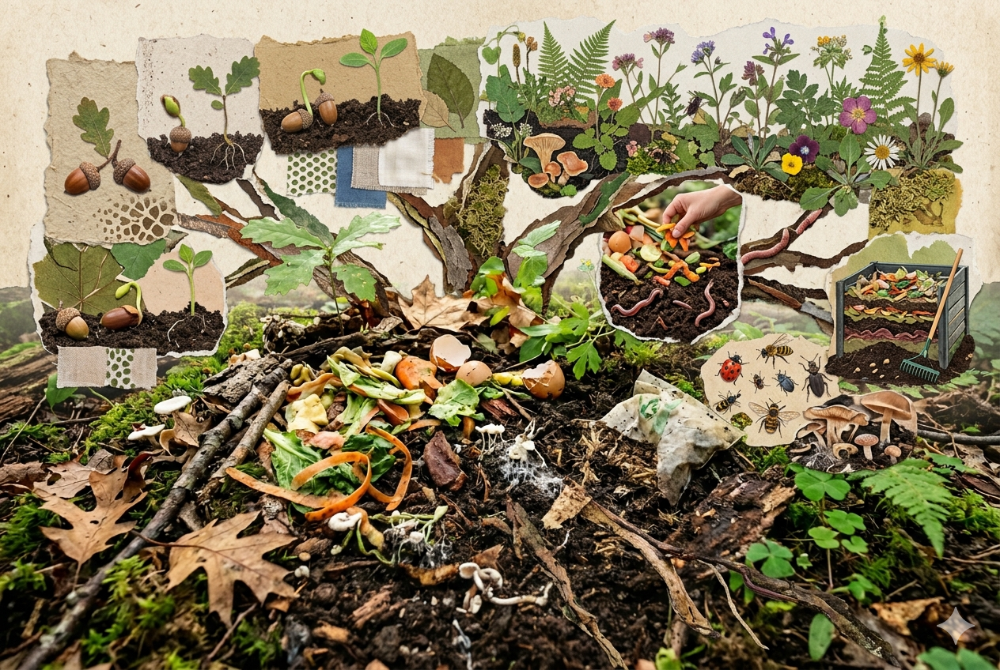
🟢 Biodegradables
Restos orgánicos como frutas, verduras y residuos naturales aprovechados para composta.
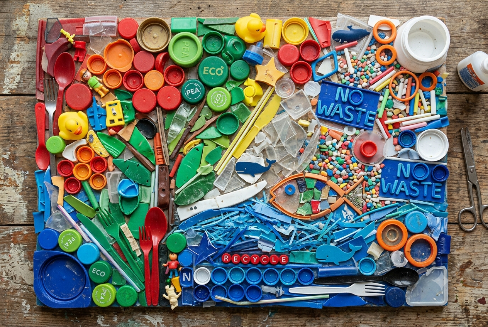
🔵 Plásticos
Botellas PET, envases y vasos desechables utilizados durante el desarrollo.
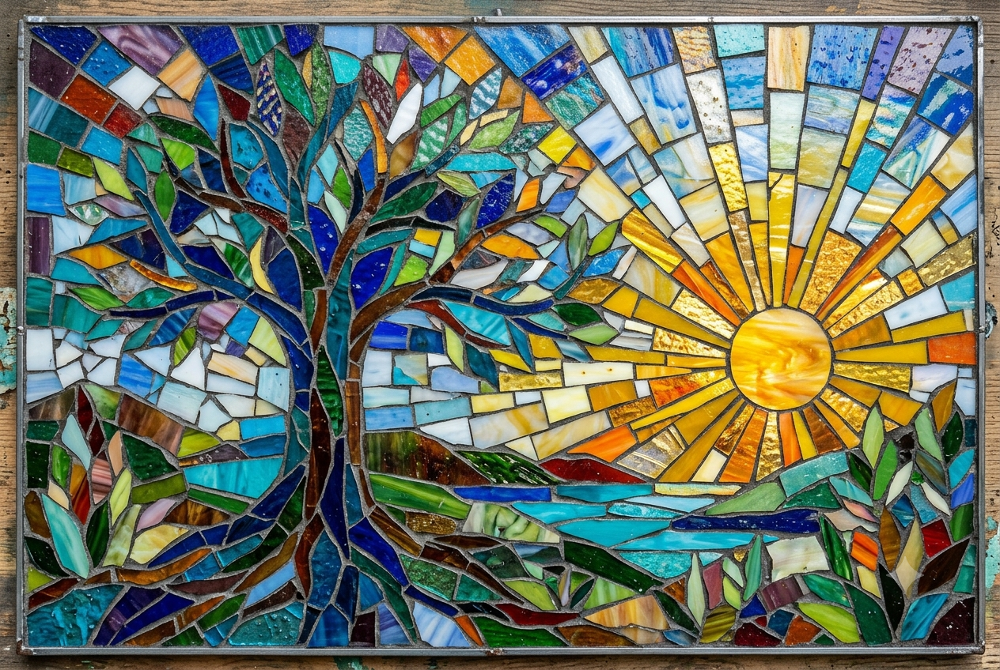
⚪ Vidrio
Botellas y recipientes de vidrio utilizados en jornadas de trabajo y reuniones.
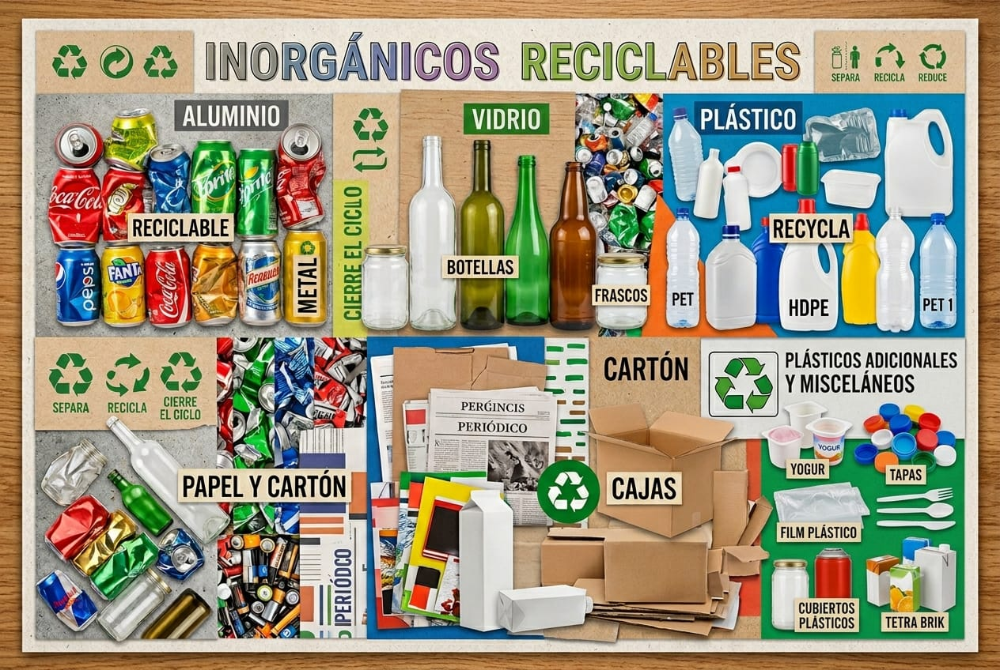
🔘 Inorgánicos Reciclables
Materiales reciclables diversos clasificados correctamente para su reutilización.
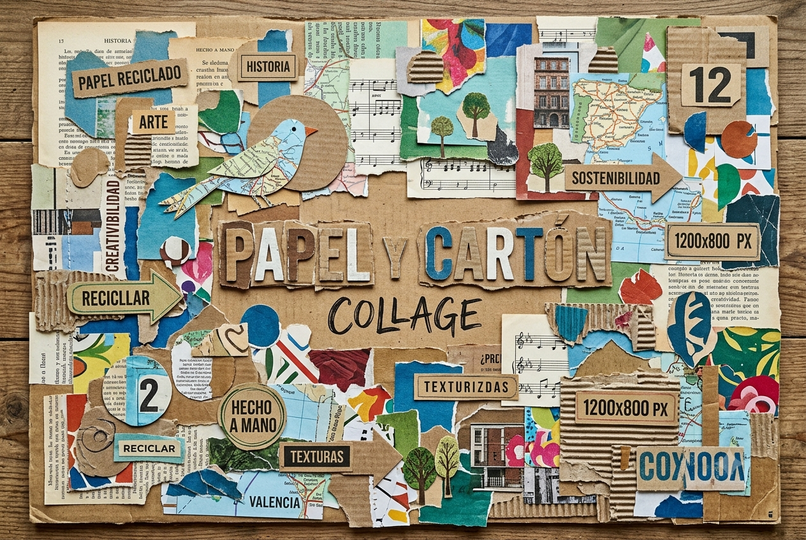
🏷️ Papel y Cartón
Bocetos, hojas de pruebas y cajas reutilizadas durante el proyecto.
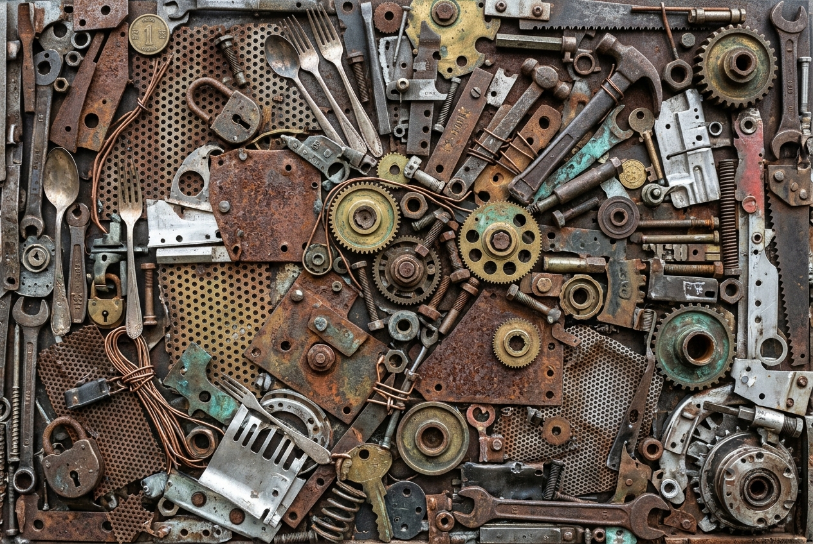
⚙️ Metales
Latas de aluminio y componentes metálicos correctamente separados.
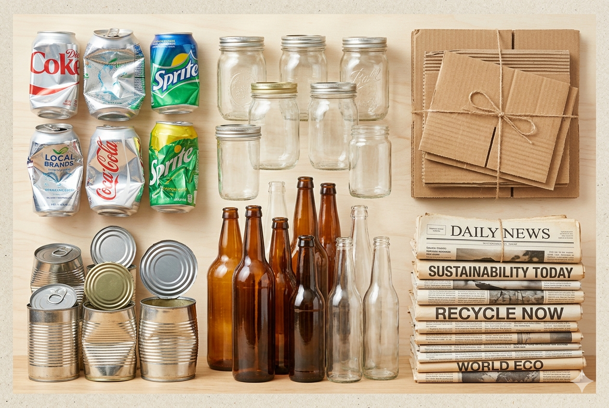
🟠 Inorgánicos Limitados
Desechos difíciles de reciclar clasificados cuidadosamente.
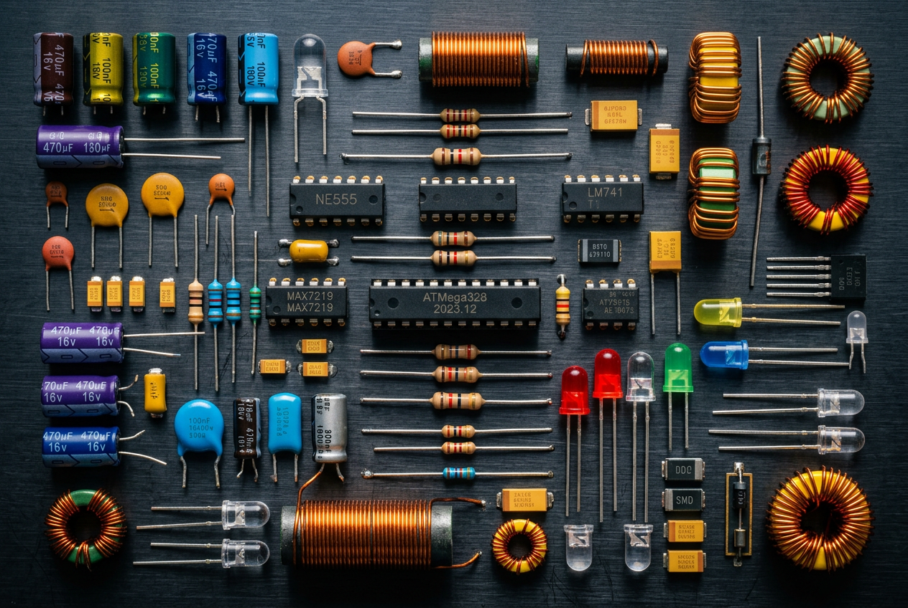
🟤 Manejo Especial
Componentes electrónicos y herramientas tecnológicas obsoletas.
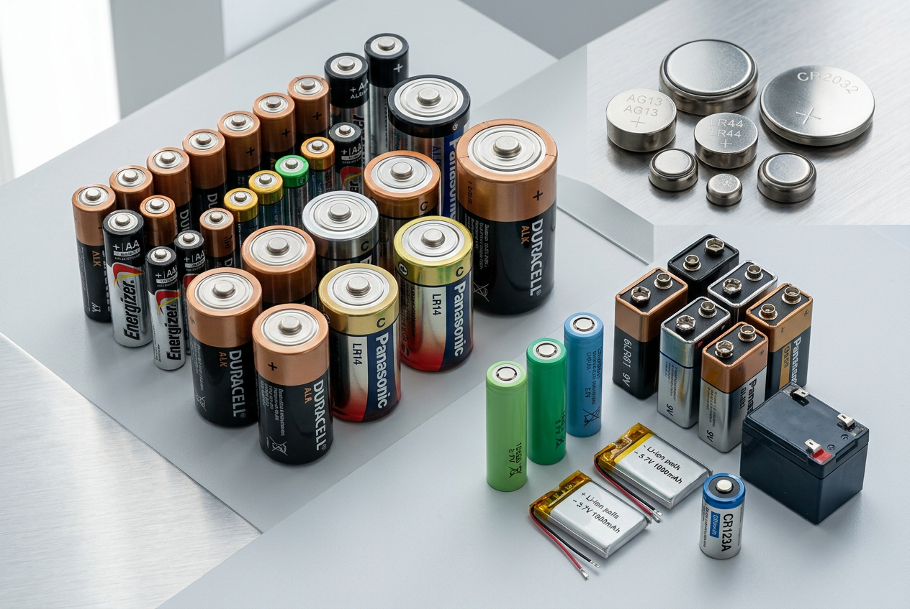
🔋 Entrega Diferenciada
Pilas y baterías separadas bajo protocolos especiales de seguridad ambiental.
🌱 : El Poder de Transformar el Mundo con Pequeñas Acciones
Las 5R son un conjunto de acciones ecológicas que buscan disminuir la contaminación y fomentar el cuidado del medio ambiente. Estas se basan en Reducir, Reutilizar, Reciclar, Recuperar y Responsabilizarse, ayudando a aprovechar mejor los recursos naturales y a generar menos residuos.
Aplicar las 5R en la vida diaria permite ahorrar energía, reducir la acumulación de basura y contribuir a la conservación del planeta para las futuras generaciones.
“No necesitamos unas pocas personas haciendo el reciclaje perfecto, sino millones haciendo pequeñas acciones todos los días.”
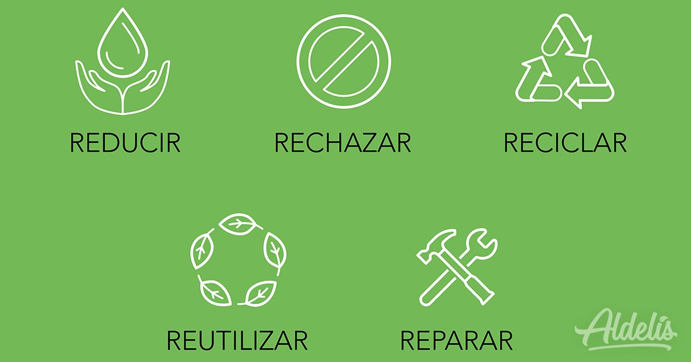
♻️ : Empresas que Cambian el Mundo
La ESR (Empresa Socialmente Responsable) es una empresa que se preocupa no solo por obtener ganancias, sino también por generar un impacto positivo en la sociedad y el medio ambiente. Estas empresas promueven valores como la ética, el cuidado ambiental, el apoyo a la comunidad y el bienestar de sus trabajadores.
Una empresa ESR busca reducir la contaminación, utilizar responsablemente los recursos naturales y participar en acciones sociales que beneficien a las personas. Además, fomenta un ambiente laboral justo y responsable.En México, el reconocimiento Distintivo ESR es otorgado por el Centro Mexicano para la Filantropía a las empresas que cumplen con prácticas responsables y sostenibles.
“Una empresa responsable no solo construye negocios exitosos, también construye un mejor futuro para todos.”
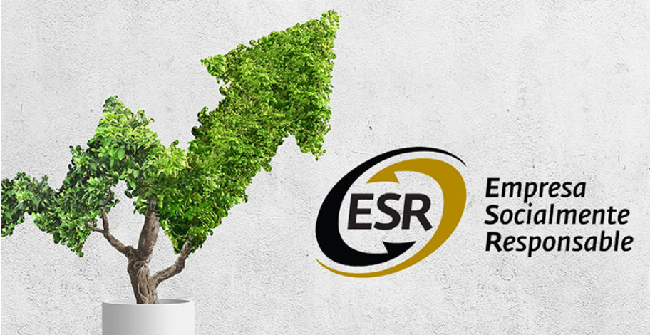
Registro de Residuos Clasificados
| Basura | Composición química | Orgánico/Inorgánico | Código de Color NADF-024-AMBT-2013 | 5R aplicable | Tiempo de Degradación |
|---|---|---|---|---|---|
| Desechos vegetales (hojas secas, ramas pequeñas/resto de plantas) | Celulosa, carbohidratos, lípidos | Orgánico | Verde | Reciclar (Composta) | 2-4 Meses |
| Restos de Comida | Proteínas + Carbohidratos | Orgánico | Verde | Reciclar (Composta) | 2-4 Meses |
| Papel de Impresiones/Cartón | Celulosa | Inorgánico | Gris | Reutilizar/Reciclar | 2-6 Meses |
| PET de envases, botellas de plàstico, bolsas de plástico, envolturas, bolsas sucias | Tereftalato de polietileno | Inorgánico reciclable | Azul | Reciclar | 500-800 años |
| Latas de Metal de Refresco | Aluminio y acero | Inorgánico reciclable | Gris | Reciclar | No se degrada |
| Pilas | Litio, Mercurio, Zinc, Manganeso y otros metales pesados | Inorgánico peligroso | Transparente | Reducir/Reciclar en centros especiales | 100-500 años |
| Envases con Químicos | Sustancias químicas y residuos tóxicos | Inorgánico peligroso | Transparente | Reducir/Manejo especializado | Variable según el químico |